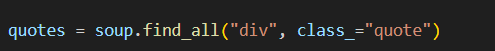
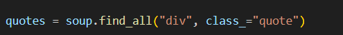
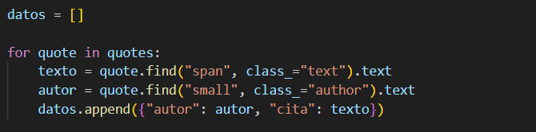
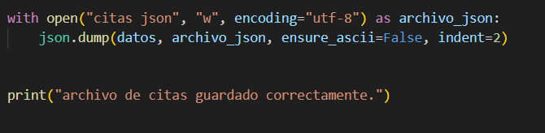

Scraping con Json
Descripción técnica
Este proyecto utiliza Python y bibliotecas como Request y BeautifulSoup para extraer citas y autores desde una página web.
Los datos obtenidos se almacenan como lista de diccionarios y luego se exportan a un archivo .json estruturado usando la biblioteca json.
¿Cómo funciona?
-
Se realiza una petición HTTP a la URL objetivo y se parsea el contendio HTML con BeautifulSoup.
 

-
Un bucle for recorre el contenido HTML parseado y extrae cada cita y su autor, almacenándolos como diccionarios.

-
Los datos extraídos se escriben en un archivo .json usando .json.dump()
